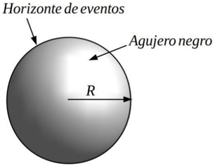
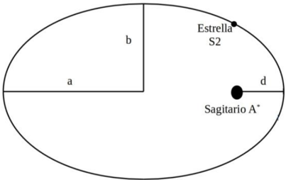
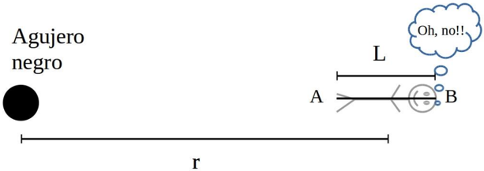

Agujeros Negros y la curvatura del Espacio-tiempo (Nivel 1)
Problema 3: Agujeros Negros y la curvatura del Espacio-tiempo
Constantes Físicas • Masa solar Msol = 2 1030 kg. • Constante de la gravitación de Newton G = 6,67 10-11 N m2 kg-2 • Constante de Planck h = 6,6 10-34 J s • Velocidad de la luz c = 3 108 m s-1 • Constante de Faraday F = 96 103 C mol-1 • Permeabilidad magnética del vacío 0 = 1,26 10-6 N A-2
Los Agujeros Negros son una de las predicciones más fascinantes de la teoría de la Relatividad General de Einstein. Diminutos, enormes, supermasivos, poco masivos, rotantes, estáticos, solitarios o acompañados. Todos diferentes, pero todos raros y un poco locos. Y con una cosa en común: deforman el espacio-tiempo de tal manera que, si algo atraviesa su horizonte de eventos, entonces ya no puede salir.
En muchas situaciones, el campo gravitatorio de un agujero negro se puede describir usando la ley de gravitación de Newton. Sin embargo, hay fenómenos que no se pueden explicar “a lo Newton” y necesitan toda la maquinaria de la teoría de la Relatividad.
En este problema estudiaremos cómo “ver” un agujero negro y cómo medir algunos de sus parámetros básicos. También analizaremos qué nos pasaría si atravesáramos el horizonte de eventos de un agujero negro. Finalmente estudiaremos cómo el agujero negro curva el espacio-tiempo y cómo esto afecta nuestras ideas de tiempo.
PARTE 1. Sagitario A* en el centro de la Vía Láctea
Los agujeros negros son… negros. Sí. No se pueden ver directamente, si los “iluminamos” con una linterna, la luz no se refleja en el horizonte de eventos. Entra y ya no sale. Hace varios años se detectó, en el centro de nuestra Vía Láctea, un objeto muy masivo y compacto llamado Sagitario A*. Este objeto no se pudo describir con los modelos estándar, por lo que se pensó que era un agujero negro (actualmente se cree que puede haber más de un agujero negro en la región central de nuestra galaxia).
Una manera de estimar la masa y el tamaño de Sagitario A* es a través del estudio de las órbitas elípticas de las estrellas a su alrededor. Consideraremos que estas órbitas se describen con las Leyes de Kepler.
En particular, aproximaremos la tercera ley de Kepler en la forma
𝑇2 𝑎3 = 4 𝜋2 𝐺 𝑀
(1)
donde 𝑇 es el período orbital, a es la longitud del semieje mayor de la órbita elíptica, 𝑀 es la masa del cuerpo alrededor del cual la estrella orbita (en este caso, Sagitario A*) y 𝐺 la constante de gravitación universal de Newton.
Problema Teórico 3 - NIVEL 1
Una de las estrellas más próximas a Sagitario A* es la estrella S2, cuyo movimiento orbital tiene las siguientes características
•
𝑎 = 840 UA = 1,3 1014m , Longitud del semieje mayor
•
𝑇 = 15 años , Período orbital
•
𝑒 = 0,989 , Excentricidad
donde UA (unidad astronómica) es 1UA = 150 109 m y 𝑒 es la excentricidad de la órbita
elíptica
𝑒= √1 −
𝑏2
𝑎2
(2)
con 𝑏 la longitud del semieje menor. Otro parámetro importante de la órbita es la
distancia 𝑑 al perihelio, el punto más próximo de la órbita al foco donde se encuentra el
cuerpo masivo,
𝑑 = 𝑎(1 − 𝑒) (3)
1a. A partir de los datos de la órbita de S2 estime la masa M de Sagitario A*.
1b. Indique cuánto mide el semieje menor 𝑏 y la distancia al perihelio 𝑑 en la órbita de S2.
1c. Teniendo en cuenta que S2 puede pensarse como un punto cuando se mueve en su órbita, y que no choca con Sagitario A*, dé una cota superior para el radio de Sagitario A*. Es decir, ¿qué valor no puede superar el radio de Sagitario A*? Nota: Una cota superior para una cantidad 𝑓 es un valor que es mayor que 𝑓.
1d. Usando la estimación anterior calcule la densidad que le correspondería a Sagitario A*.
PARTE 2. ¿¿O será demasiado tarde??
Nos decidimos a hacer un viaje espacial. Sabemos que hay un agujero negro cerca, pero no sabemos cuán cerca. De pronto sentimos cosas raras en el cuerpo… ¿Habremos atravesado el horizonte de eventos? ¿Podremos escapar? ¿Será demasiado tarde?
Problema Teórico 3 - NIVEL 1 Consideremos una persona en el campo gravitatorio de un agujero negro con los pies apuntando al centro del agujero negro, como se ve en la figura siguiente.
Suponiendo que el campo gravitatorio del agujero negro se puede describir por la ley de gravitación de Newton, encontramos que diferentes puntos del cuerpo sienten diferentes fuerzas, ya que se encuentran a diferentes distancias del agujero negro. A pesar de que todos los puntos del cuerpo son acelerados hacia el agujero negro, los pies son atraídos con más fuerza que la cabeza. Por lo tanto, la persona siente que la cabeza y los pies son tironeados en sentidos opuestos, y el cuerpo tiende a estirarse. Este fenómeno se conoce como “espaguetización” porque el cuerpo se estira y afina como un espagueti. Para simplificar el análisis, modelamos el cuerpo humano por un segmento de longitud L que se ubica a lo largo de una línea que pasa por el centro del agujero negro. Suponemos que el centro del cuerpo está a una distancia 𝑟 del centro del agujero negro. Ver Figura.
2a. Dé una expresión para la aceleración gravitatoria 𝑎 que siente el punto central del cuerpo y para la aceleración gravitatoria 𝑎𝐴 que siente el punto extremo del cuerpo más próximo al agujero negro indicado en la figura como 𝐴. Escríbalas en términos de la constante de gravitación universal de Newton 𝐺, la masa del agujero negro 𝑀 , 𝑟 y 𝐿.
2b. Dé una expresión para la aceleración que siente el punto 𝐴 con respecto a la
que siente el punto medio del mismo. Es decir, escriba
𝑎0𝐴 = 𝑎𝐴 − 𝑎
(4)
en términos de 𝐺, 𝑀, 𝑟 y 𝐿. Esta aceleración relativa se llaman aceleración de
marea.
2c. Tome el límite en que la longitud del cuerpo es mucho menor que la distancia al
centro del agujero negro, 𝐿 << 𝑟 para determinar claramente el signo de la
aceleración de marea. Indique su sentido.
Puede ser útil la expresión
1
(1 ± 𝑥)2 ≈1 ∓2𝑥
(5)
válida cuando 𝑥 << 1.
Para entender el efecto de marea que producen los agujeros negros sobre el cuerpo, vamos a considerar dos agujeros negros bien distintos:
Problema Teórico 3 - NIVEL 1 • AN1: Agujero negro supermasivo
- masa: 𝑀1 = 2 10 39 kg (mil millones de masas solares).
- radio del horizonte de eventos 𝑅1 = 3 10 12 m (30 mil millones de kilómetros).
• AN2: Agujero negro estelar
- masa: 𝑀2 = 2 10 31 kg (10 masas solares).
- radio del horizonte de eventos 𝑅2 = 3 10 4 m (30 kilómetros).
2d. Suponiendo que cuando la aceleración de marea es igual a 10 N kg, una persona siente incomodidad, calcule a qué distancia del centro de AN1 y de AN2 ocurre esto. Suponga que la longitud de la persona es 𝐿 = 2 m.
PARTE 3. Dilatación gravitacional del tiempo
En la teoría de la Relatividad General, la gravedad se manifiesta a través de la curvatura del espacio y el tiempo. Esto hace, en particular, que el tiempo corra de diferente forma en regiones con campos gravitatorios de distinta intensidad, por ejemplo cerca de un agujero negro o lejos de él. Cuanto más cerca uno está de un objeto muy masivo, más lento corre el tiempo. Este efecto resulta de la constancia de la velocidad de la luz y se usa a diario, por ejemplo en el Sistema de Posicionamiento Global (GPS). Pensemos que a una distancia 𝑟 del centro un agujero negro, está Schrödinger con un gato (vivo y afuera de la caja). El gato tiene pulgas. El gato se rasca dos veces. A una distancia muy muy grande de ellos y del agujero negro está Einstein. Einstein está tan lejos del agujero negro que prácticamente no siente su campo gravitatorio. Tanto Schrödinger como Einstein miden el tiempo que pasa entre las dos veces que el gato se rasca. El tiempo que encuentra Schrödinger es 𝑇𝑆 y el tiempo que encuentra Einstein es 𝑇𝐸. Cuando comparan las dos mediciones encuentran
𝑇𝐸=
1
√1− 𝛼 2 𝑀
𝑟
𝑇𝑆
(6)
donde 𝑀 es la masa del agujero negro, 𝑟 es la distancia a la que se encuentra Schrödinger del centro un agujero negro y 𝛼 es una constante positiva dimensional. Esta fórmula se conoce como Dilatación gravitacional del tiempo y funciona para agujeros negros no rotantes, llamados agujeros negros de Schwarzschild.
3a. ¿Quién mide un tiempo más largo? ¿Schrödinger o Einstein?
3b. ¿Qué unidades tiene la constante 𝛼 que aparece en la fórmula de la dilatación del tiempo (6)?
3c. Suponiendo que la constante 𝛼 depende sólo de dos de las constantes físicas presentadas al comienzo del problema sin constantes numéricas adicionales encuentre 𝛼 explícitamente en términos de estas constantes.
Problema Teórico 3 - NIVEL 2



Topic: Gravitation, Special Relativity Metodi: Newton’s Law of Gravitation, Dimensional Analysis, Photon Energy Relation Competenze: Physical Reasoning, Mathematical Modeling Objects: Black Hole, Photon, Star Fonte: Testo (PDF) — p.7
**L’intervallo di spazio-tempo e la curvatura dello spazio-tempo (livello 1) **
Problema 3: buchi neri e curvatura dello spazio-tempo
Costanti fisiche • Massaggio solare Msol = 2 1030 kg. • Costante di gravitazione di Newton G = 6,67 10-11 N m2 kg-2 • Costante di Planck h = 6,6 10-34 Js • Velocità della luce c = 3 108 m s-1 • Costante di Faraday F = 96 103 C mol-1 • Permeabilità magnetica del vuoto 0 = 1,26 10-6 N A-2
I buchi neri sono una delle previsioni più affascinanti della teoria della relatività Generale de Einstein. Minuti, enormi, supermassivi, poco massicci, rotanti, statici, solitari o accompagnati. Tutti diversi, ma… Tutti strani e un po’ pazzi. E con una cosa in comune: distortano lo spazio-tempo in questo modo che, se qualcosa attraversa il suo orizzonte di eventi, Allora non può uscire.
In molte situazioni, il campo gravitazionale di un buco nero può essere descritto. usando la legge di Newton della gravità. Tuttavia, ci sono fenomeni che non si possono fare. E hanno bisogno di tutto il macchinario della teoria della relatività.
In questo problema, studiamo come vedere un buco nero e come misurare alcuni di questi. i suoi parametri di base. E poi analizzeremo cosa ci sarebbe successo se avessimo attraversato il orizzonte degli eventi di un buco nero. Finalmente studieremo come il buco si fa. il nero curva lo spazio-tempo e come questo influisce sulle nostre idee del tempo.
Parte 1. Sagitario A* al centro della Via Lattea
I buchi neri sono… Negri. Sí. Non possono essere visti direttamente, se li illuminiamo con una lanterna, la luce non si riflette nell’orizzonte degli eventi. Entrate e non uscite. Molti anni fa, nel centro della nostra Via Lattea, è stato rilevato un oggetto molto massiccio e… Compatto chiamato Sagitario A*. Questo oggetto non è stato descritto con i modelli Standard, quindi si pensava che fosse un buco nero (attualmente si pensa che può ci sono più di un buco nero nella regione centrale della nostra galassia).
Un modo per stimare la massa e la dimensione di Sagitario A* è attraverso lo studio delle orbite elliptiche delle stelle che le circondano. Considereremo che queste orbite sono che descrivono con le leggi di Kepler.
In particolare, avvicineremo la terza legge di Kepler in forma
𝑇2 𝑎3 = 4 𝜋2 𝐺 𝑀
(1)
dove T è il periodo orbitale, a è la lunghezza della semicilometria maggiore dell’orbita elliptica, M è la massa del corpo intorno al quale orbita la stella (in questo caso Sagittario A*) e G la Costante di gravitazione universale di Newton.
Problema teorico 3 - NIVEL 1
Una delle stelle più vicine a Sagitario A* è la stella S2, il cui movimento orbitale ha le seguenti caratteristiche
• a = 840 UA = 1,3 1014m , Longitudine del semestre maggiore • T = 15 anni , Periodo orbitale • e = 0,989 , eccentricità
dove UA (unità astronomica) è 1UA = 150 109 m e e è l’escentricità dell’orbita
- Eliptica
𝑒= √1 −
𝑏2
𝑎2
(2)
con b la lunghezza del semestre minore. Un altro parametro importante dell’orbita è la Distanza d dal perihelio, il punto più vicino dell’orbita al foco in cui si trova il corpo massiccio, 𝑑 = 𝑎(1 − 𝑒) (3)
1a. Sulla base dei dati dell’orbita di S2, stima la massa M di Sagittario A*.
1b. Indicare quanto misura il semiegio minore b e la distanza dal perihelio d in orbita de S2.
1c. Considerando che S2 può essere pensato come un punto quando si muove In orbita, e non colpisce Sagittario A*, dare un quota superiore per la radio di Sagitario A*. Cioè, quale valore non può superare il raggio di Sagitario A*? Nota: Un quota superiore per un quantitativo f è un valore superiore a f.
1d. Usando la stima precedente calcola la densità che corrisponde a Sagitario A*.
Parte 2 O sarà troppo tardi?
Abbiamo deciso di fare un viaggio nello spazio. Sappiamo che c’è un buco nero vicino, ma Non sappiamo quanto vicino. All’improvviso sentiamo cose strane nel corpo… - Apriremo? Attraverso l’orizzonte degli eventi? Possiamo scappare? - Sarà troppo tardi?
Problema teorico 3 - NIVEL 1 Consideriamo una persona nel campo gravitazionale di un buco nero con i piedi. puntando al centro del buco nero, come si vede nella figura seguente.
Supponendo che il campo gravitazionale del buco nero possa essere descritto dalla legge di La gravitazione di Newton, abbiamo scoperto che i diversi punti del corpo sentono diversi. Le forze si trovano a diverse distanze dal buco nero. Anche se Tutti i punti del corpo si accelerano verso il buco nero, i piedi sono attirati. più forte della testa. Quindi, la persona sente che la testa e i piedi sono si tirano in direzioni opposte, e il corpo tende a allungarsi. Questo fenomeno è noto. come “spaghetti” perché il corpo si allunga e si affina come uno spaghetti. Per semplificare l’analisi, modelliamo il corpo umano da un segmento di lunghezza L che si trova lungo una linea che passa attraverso il centro del buco nero. Supponiamo che che il centro del corpo è a r distanza dal centro del buco nero. Vedi Figura.
2a. Fornite un’espressione per l’accelerazione gravitazionale che il punto centrale sente. La velocità gravitazionale aA che si sente il punto estremo del corpo corpo più vicino al buco nero indicato nella figura come A. Scrivi. in termini di Newton G, costante di gravitazione universale, la massa di buco nero M , R e L .
2b. Date un’espressione per l’accelerazione che il punto A sente rispetto alla
che sente il punto medio della stessa. Cioè, scriva.
𝑎0𝐴 = 𝑎𝐴 − 𝑎
(4)
in termini di G, M, r e L. Questa accelerazione relativa è chiamata accelerazione di
- La marea.
2c. Prendi il limite in cui la lunghezza del corpo è molto inferiore alla distanza al
centro del buco nero, L << r per determinare chiaramente il segno di
accelerazione della marea. Indica il suo senso.
La parola può essere utile.
1
(1 ± 𝑥)2 ≈1 ∓2𝑥
(5)
valida quando x << 1.
Per capire l’effetto delle maree che producono i buchi neri sul corpo, Considereremo due buchi neri ben distinti:
Problema teorico 3 - NIVEL 1 • AN1: supermassiccio buco nero
- massa: M1 = 2 10 39 kg (miliard di masse solari).
- radius dell’orizzonte di eventi R1 = 3 10 12 m chilometri).
• AN2: buco nero stellare
- massa: M2 = 2 10 31 kg (10 masse solari).
- radius dell’orizzonte di eventi R2 = 3 10 4 m (30 km).
2d. Supponiamo che quando l’accelerazione della marea è pari a 10 N kg, una persona Se si sente a disagio, calcola a che distanza dal centro di AN1 e AN2 si verifica.
- Questo. Supponiamo che la lunghezza della persona sia L = 2 m.
Parte 3. Dilatazione gravitazionale del tempo
Nella teoria della relatività generale, la gravità si manifesta attraverso la curvatura. dello spazio e del tempo. Questo fa in particolare che il tempo corra in modo diverso in regioni con campi gravitazionali di diversa intensità, ad esempio vicino a un buco nero o lontano da lui. Più si avvicina a un oggetto molto massiccio, più lentamente si corre. Il tempo. Questo effetto è il risultato della costante velocità della luce e viene usato quotidianamente. per esempio nel Sistema di Posizione Globale (GPS). Supponiamo che a r distanza dal centro un buco nero, ci sia Schrödinger con un gatto (vivo e fuori cassa). Il gatto ha polpe. Il gatto si graffi due volte. A una . La distanza molto, molto grande da loro e dal buco nero è Einstein. Einstein è così. lontano dal buco nero che praticamente non sente il suo campo gravitazionale. Tanto . Schrödinger e Einstein misurano il tempo che passa tra le due volte che il gatto si
- Scratta. Il tempo che Schrödinger trova è TS e il tempo che Einstein trova è 𝑇𝐸. Quando confrontano le due misurazioni trovano
𝑇𝐸=
1
√1− 𝛼 2 𝑀
𝑟
𝑇𝑆
(6)
dove M è la massa del buco nero, r è la distanza che si trova Schrödinger del centro un buco nero e α è una costante positiva dimensionale. Questa è la mia . La formula è chiamata Dilatazione gravitazionale del tempo e funziona per i buchi. i buchi neri non rotanti, chiamati buchi neri di Schwarzschild.
3a. Chi misura un tempo più lungo? Schrödinger o Einstein?
3b. Quali unità hanno la costante α che appare nella formula di dilatazione del tempo (6)?
3c. Supponendo che la costante α dipenda solo da due delle costanti fisiche presentate all’inizio del problema senza ulteriori costanti numeriche troverà α esplicitamente in termini di queste costanti.
Problema teorico 3 - NIVEL 2
Topic: Gravitation, Special Relativity Metodi: Newton’s Law of Gravitation, Dimensional Analysis, Photon Energy Relation Competenze: Physical Reasoning, Mathematical Modeling Objects: Black Hole, Photon, Star Fonte: Testo (PDF) — p.7
**Black holes and curvature of space-time (Level 1) **
Problem 3: Black Holes and the curvature of space-time
Physical constants • The mass of the solar mass Msol = 2 1030 kg. • Newton’s gravitational constant G = 6.67 10-11 N m2 kg-2 • Planck constant h = 6.6 10-34 Js • The speed of light c = 3 108 m s-1 • Faraday constant F = 96 103 C mol-1 • Magnetic permeability of the vacuum 0 = 1.26 10-6 N A-2
The Black Holes are one of the predictions . The most fascinating of all the relativity theories. General de Einstein. What is it? Minutes, huge, Supermassive, low-massive, rotating, static, alone or accompanied. They’re all different, but All weird and a little crazy. And with one thing in common: they distort space-time in such a way That, if something crosses your event horizon, Then you can’t get out.
In many situations, the gravitational field of a black hole can be described. using Newton’s law of gravitation. However, there are phenomena that cannot be done. They need all the machinery of the theory of relativity.
In this problem we’ll study how to see a black hole and how to measure some of the black hole. the basic parameters. We will also look at what would happen to us if we crossed the event horizon of a black hole. We ‘ll finally study how the hole is made . Black curves space-time and how this affects our ideas of time.
The following information is provided: Sagittarius A* at the center of the Milky Way
The black holes are… - The black people. Sí. They can’t see it directly, if we light them up. With a flashlight, the light is not reflected in the event horizon. He’s in and he’s not out. Several years ago, at the center of our Milky Way, a very massive object was detected. It’s a compact object called Sagittarius A*. This object could not be described with the models Standard, so it was thought to be a black hole (currently believed to be able to There’s more than one black hole in the central region of our galaxy.
One way to estimate the mass and size of Sagittarius A* is through the study of the ________. elliptical orbits of the stars around them. We ‘ll consider these orbits to be They describe it with Kepler’s laws.
In particular, we’ll approximate Kepler’s third law in the form
𝑇2 𝑎3 = 4 𝜋2 𝐺 𝑀
(1)
where T is the orbital period, a is the length of the major semicircle of the elliptical orbit, M is The mass of the body around which the star orbits (in this case, Sagittarius A*) and G the Newton’s universal gravitational constant is the most important of all.
Theoretical problem 3 - level 1
One of the nearest stars to Sagittarius A* is the star S2, whose orbital motion has the following characteristics
• a = 840 UA = 1,3 1014m , Longest half-life • T = 15 years , orbital period • E = 0.989 , eccentricity
where UA (astronomical unit) is 1UA = 150 109 m and e is the eccentricity of the orbit
Elliptical
𝑒= √1 −
𝑏2
𝑎2
(2)
with b the length of the minor semicircle. Another important parameter of orbit is the distance d to perihelion, the point closest to the focus orbit where the mass body, 𝑑 = 𝑎(1 − 𝑒) (3)
1a. From the S2 orbit data, estimate the mass M of Sagittarius A*.
1b. Indicate the size of the semicircle b and the distance to perihelion d in orbit. de S2.
1c. Considering that S2 can be thought of as a point when it moves In its orbit, and not colliding with Sagittarius A*, give a higher radius range. The following table shows the results of the calculation of the risk of the risk of the risk of infection: I mean, what value can’t exceed the radius of Sagittarius A*? Note: A higher quota for a quantity f is a value that is greater than f.
1d. Using the above estimate calculate the density that would correspond to The following is a list of the species in the genus Sagittarius.
The following information is provided: Or will it be too late?
We decided to go on a space trip. We know there’s a black hole nearby, but We don’t know how close. Suddenly we feel strange things in the body… Shall we open? Through the event horizon? Can we escape? Is it too late?
Theoretical problem 3 - level 1 Consider a person in the gravitational field of a black hole with feet . pointing to the center of the black hole, as shown in the figure below.
Assuming the gravitational field of a black hole can be described by the law of Newton’s gravitational pull, we find that different points in the body feel different. forces, as they are at different distances from the black hole. Although All points on the body are accelerated towards the black hole, the feet are attracted. stronger than the head. So the person feels that the head and feet are Tossed in opposite directions, and the body tends to stretch. This phenomenon is known. Like spaghetti, because the body stretches and tastes like spaghetti. To simplify the analysis, we model the human body by a segment of length L It’s located along a line that goes through the center of the black hole. Let ‘s say . The center of the body is at a distance r from the center of the black hole. See Figure.
2a. Give an expression for the gravitational acceleration the center of gravity feels . The body and gravitational acceleration toA that feels the extreme point of the body closest to the black hole shown in Figure A. Write them down . In terms of Newton’s universal gravitational constant G, the mass of black hole M , R and L .
2b. Give an expression for the acceleration that point A feels with respect to the
who feels the middle of it. I mean, write.
𝑎0𝐴 = 𝑎𝐴 − 𝑎
(4)
in terms of G, M, r and L. This relative acceleration is called the acceleration of
The tide.
2c. Take the limit where the body length is much shorter than the distance to the
The centre of the black hole, L << r to clearly determine the sign of the
The tidal acceleration. Point out your point.
The expression may be useful.
1
(1 ± 𝑥)2 ≈1 ∓2𝑥
(5)
This is true for x < 1.
To understand the tidal effect that black holes produce on the body, Let ‘s consider two very different black holes:
Theoretical problem 3 - level 1 • AN1: Supermassive black hole
- mass: M1 = 2 10 39 kg (billion solar masses).
- radius of the event horizon R1 = 3 10 12 m (30 billion of miles .
• AN2: Star black hole
- mass: M2 = 2 10 31 kg (10 solar masses).
- the radius of the event horizon R2 = 3 10 4 m (30 km).
2d. Assuming that when the tidal acceleration is equal to 10 N kg, one person If you feel uncomfortable, calculate how far from the center of AN1 and AN2 it occurs. This one. Suppose the length of the person is L = 2 m.
The following is the list of the products: Gravitational dilation of time .
In general relativity, gravity is manifested through curvature. of space and time. This makes time run differently in particular. regions with different gravitational fields, for example near a hole black or away from it. The closer you get to a very massive object, the slower you run. The weather. This effect is the result of the constant of the speed of light and is used daily. For example, in the Global Positioning System (GPS). Let’s say that at a distance r from the center of a black hole, there’s Schrödinger with a cat (living and out of the box). The cat has fleas. The cat scratches twice. One . Very, very, very large distance from them and the black hole is Einstein. Einstein is so… away from the black hole that practically doesn’t feel its gravitational field. So much for it . Schrödinger and Einstein measure the time between the two times that the cat is scratch it. The time Schrödinger finds is TS and the time Einstein finds is 𝑇𝐸. When you compare the two measurements , you find
𝑇𝐸=
1
√1− 𝛼 2 𝑀
𝑟
𝑇𝑆
(6)
where M is the mass of the black hole, r is the distance it is located at Schrödinger’s center is a black hole and α is a positive dimensional constant. This one . The formula is known as gravitational time dilation and it works for holes. non-rotating black holes, called Schwarzschild black holes.
3a. Who measures a longer time? Schrödinger or Einstein?
3b. What units have the constant α that appears in the formula for dilation? of time (6)?
3c. Assuming the constant α depends on only two of the physical constants presented at the beginning of the problem without additional numerical constants Find α explicitly in terms of these constants.
Theoretical problem 3 - Level 2
Topic: Gravitation, Special Relativity Metodi: Newton’s Law of Gravitation, Dimensional Analysis, Photon Energy Relation Competenze: Physical Reasoning, Mathematical Modeling Objects: Black Hole, Photon, Star Fonte: Testo (PDF) — p.7